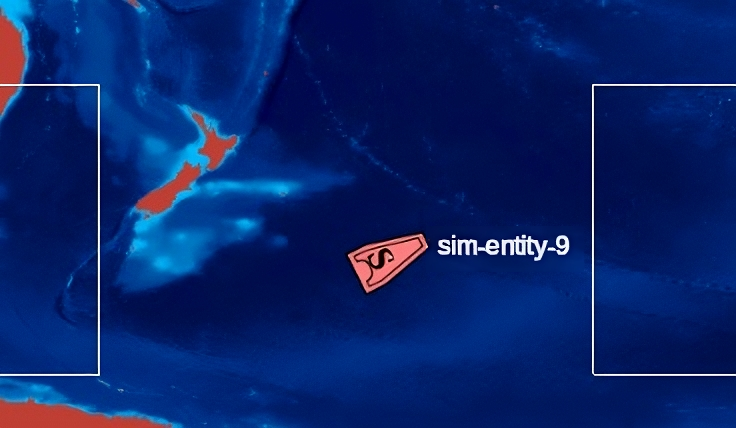
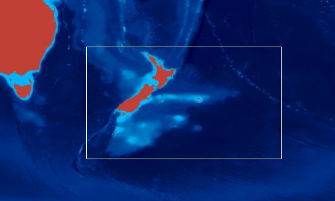
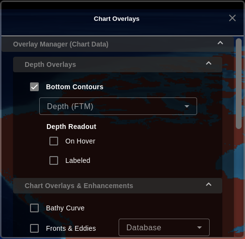
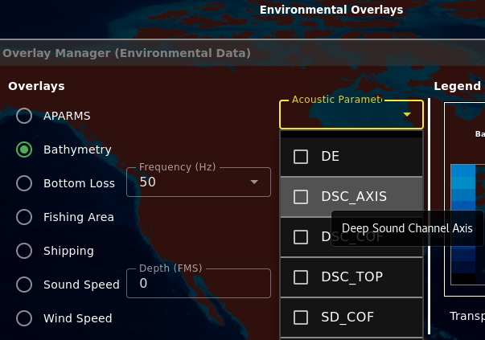
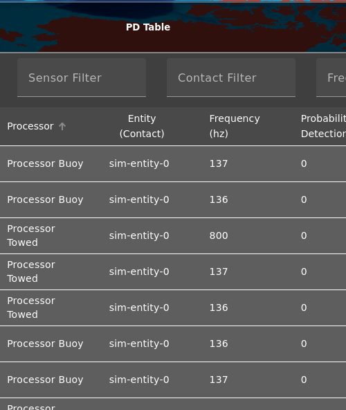
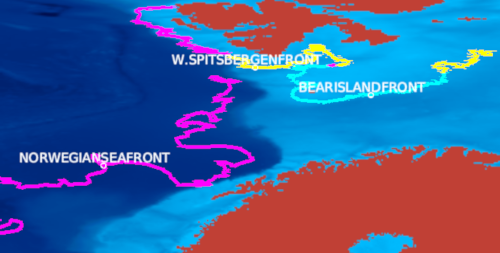
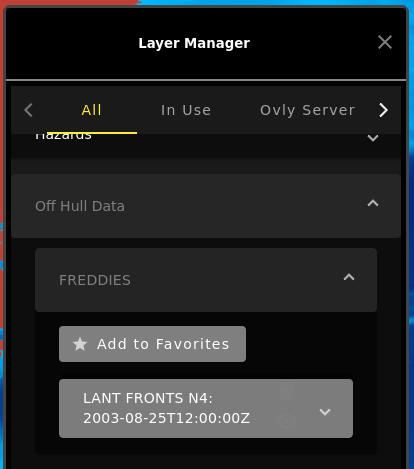

My Work
APARMS Front-End (with Marcus)

Description
This was the first ticket that Marcus and I did together. The purpose of this was to create and design the front-end toggle for the APARMS (Acoustic Parameters) layers. Since there was no database, configuration, and implementation for the layers, there was no wiring to the backend. The goal of this task was to provide a visual for how the layers will be toggled.
Process
The first thing we did was find where CTDA (Combat Tactical Decision Aid), another group who shares code, kept their implementation for the APARMS layers. We then used that information to create an enum of the available APARMS and had the dropdown menu loop through that when it was displayed. This helped make the layers configuareable in the future.
What I learned
Since this was our first exposure to DevOps and the shared code between CTDA and AIC, I learned a lot about the general processes for development, such as: tracking progress in Jira, how code is shared between projects, how to naviagte the shared code, tracking updates with changelogs and version numbers, getting approvals from code-owners and other devs. This was also my first time coding in Angular, so I was exposed to the many features, such as: front and back-end connections, *ngFor and *ngIf, Angular materials to make styling easier.
International Date Line Multi-Select Box Bug (with Marcus)
Before:
After:
Description
This was the second ticket that Marcus and I did together. The purpose of this was to fix a bug that wrapped the selection box around the globe instead of crossing the IDL. IDL issues are very common in Cesium (the globe renderer) because there is a seam in the globe that allows the user to switch between 2D and 3D.
Process
The first thing we did was find where the mouse actions were stored, and what was causing the issue. Cesium was rendering the rectangle with the exact coordinates, without considering the shortest route. To fix this we tracked the exact conditions where the box would cross the IDL, and swapped the east and west boundaries. We also made sure that this did not break across the prime meridian, since they had similar cases.
What I learned
For this ticket, I learned about the built-in Cesium libraries that made it eay to render polygons and layers on the Cesium map. From reasearching similar issues, I found that there was no way to fix the small pixel jump at the IDL, since it is an issue with Cesium, and we cannot work around it. This also applies to the entity icons and smaller selection boxes around them.
Bottom Contours GUI Redesign
Description
This was the first ticket I did on my own. The goal was to make this section of the chart overlays panel more clear that it controlled one layer, and make it possible to have both readouts toggled at once. I got a lot of feeback on this ticket, and the final product ended up to be very similar to my initial design.
Process
The first thing I did was put the readouts under an expanded dropdown for the specific bottom contours. While this took up more room, thought it was more intuitive since multiple contours can be selected. My PR got some feedback that I should not have expanded the dropdown to match the overall design, and that I should also change the radio buttons to be checkboxes.
What I learned
For this ticket, I learned a little more about how CSS and HTML are connected. The style used for all of the rows is a "denseFormFieldRow" from an SCSS. At first, I deleted this class and favored a larger design, but since it didn't match, I changed it back. (or rather... Kyle did)
APARMS Front-End and Config Refactor
Description
This was a subtask on a larger ticket to display and complete the APARMS functionality. My task was to clarify the front-end to make wiring to the back-end more seamless. This included adding tooltips to the dropdown options with the non-abbreviated name of the layer, and making the options configurable from a Drydock .yaml file.
Process
The first thing I did was research and add the tooltips to the options, which required me to find the full names of the abbreviations from CTDA's code. Since they hadn't been configured yet, I added a method with a switch case to handle which name was displayed in the tootltip. Then I worked with Bobby to configure the layers from Drydock and make it readable.
What I learned
For this ticket, I learned a lot about how to navigate and edit with vim. There are many shortcuts to editing these files without needing to exit the terminal, the only downside is learning all of the commands. This also introduced me to how the two repos are connected and how they interact with databases to get the layers.
Detections Type Addition and Testing
Description
This was a subtask on a larger ticket to add a new field to the probability of detection features. The new detection type specifies if the reason for detection was from the line of sight, range, passive narrowband, passive narrowband transient, passive broadband, or passive transient. Each of these types specifies how the target was detected and what sensors were used. This variable had to be added and transferred between the probability-of-detection-driver, the probability-of-detection-calculator, and the probability-of-detection-service pods to be fully implemented.
Process
The first thing I did with Bradley was discuss what the new variable would be called, at the time both sensingMethod and detectionType existsed, so we decided on detectionCause. Once I put up my merge request one of the other developers asked what the difference was between the two variables. Turns out that sensingMethod and detectionType were the same thing, and I updated my merge request to refactor those variable names and changed detectionCause to detectionType. To test that the changes were parsed through all the files, I used kubernetes commands to track and increase logs to find the added field.
What I learned
For this task, I learned a lot about how the pods interact with each other and how to use pods that were running. I ran into a big problem whan I needed to update my repos, the IDs did not match up between the similation data creator and the driver pods. To fix this, I had to edit both the configmap in the driver pod and fix Node-Red, luckily I had help to figure this out.
Freddies Migration (with Marcus)
 Description
This was a huge ticket that mirgrated the Freddies layer functionality from CTDA. This included the file-manager and geodocument pods, and all of the overlays files. This put the files into the layer-manager, where they could be displayed, deleted, and favorited. The files are manually uploaded into the file-manager using curl commands where they are then sent to geodocument manager where they are converted into data that can be displayed on the geo.
Process
The first thing I helped with investigating where AIC displays their layers and how they ae toggled. We learned that it was from an mqtt subscription to databases, that was toggled from the front end. The files were directly uploaded to a file-manager pod, which connected to the geodocument manager to create the readable data, and then it was toggled from layer-manger in the geo. Marcus migrated all of these files from CTDA to Trainer, and I helped test that everything worked as expected and clean up code.
What I learned
For this task, I learned a lot about mqtt subscriptions and how the pods interact with the geo. It was interesting to see how CTDA implemented their layers and how we used their code to source some of the back-end for the layers. This ticket was the hardest to test since I had to create a new image and run it in the cluster to get it working. This tiecket took a very long time since a lot of files were migrated and we had to have CTDA test and approve the migration.